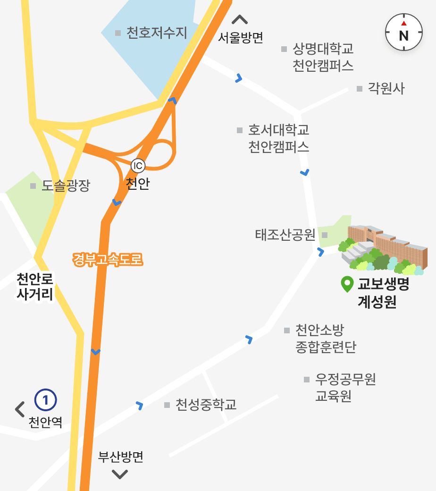

| 주소 | (31068) 충청남도 천안시 동남구 태조산길 267-113(유량동) |
|---|---|
| 전화번호 | 041-559-9604(주간) 041-559-9610(야간) |
| 팩스번호 | 041-559-9561 |
교통 이용안내
개인차량
천안IC 통과 후 우회전하는 경우
- 첫 번째 우회전 진입로(호서대학교 방향)에서 진입 → 호서대학교 통과 → 첫 번째 삼거리(좌측의 주유소 통과 전 삼거리)에서 우회전(태조산청소년수련원 방향, 길이 작아 지나치기 쉬움) → 가다가 태조산청소년수련원 삼거리에서 계성원으로 진입
천안IC 통과 후 좌회전하는 경우
- 첫 번째 사거리에서 독립기념관 방향으로 좌회전 → 첫 육교 통과 후 첫 번째 신호등(두 번째 육교 전)에서 태조산청소년수련원 방향으로 좌회전 → 가다가 태조산청소년수련원 삼거리에서 계성원으로 진입
대중교통
- 천안역 및 고속터미널에서 택시 이용 (20분 내외 소요)
- 천안아산역에서 택시 이용 (30분 내외 소요)
교육생 입소버스
입소 시
- 천안역 ↔ 계성원 운행
- 천안아산역 ↔ 계성원 운행
퇴소 시
- 계성원 ↔ 천안역/천안아산역/터미널 셔틀 운행
- 계성원 ↔ 태조산 수련원 주차장 셔틀 운행
- 입소 및 퇴소 시 셔틀 버스 운행은 연수과정 및 인원에 따라 탄력적으로 운영됩니다.